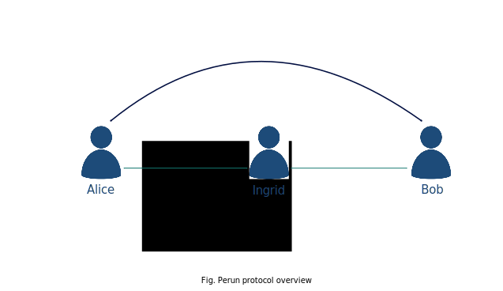
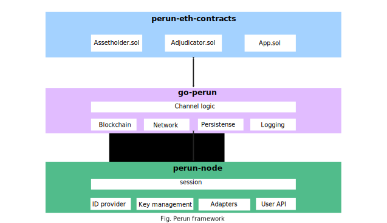

Introduction
Perun is an open source project that aims to increase blockchain transaction throughput by using just a handful of main chain transactions to move an entire peer-to-peer network of activity off the main chain. After an initial setup of a set of basic transaction channels, this network lets any participant transact with any other participant via virtual channels which do not require additional on-chain setup.
Started as an independent open-source project, as a collaboration between the Robert Bosch GmbH’s “Economy of Things” project and the Perun team of Technical University of Darmstadt (TUDa), we later joined the Hyperledger Foundation as a Hyperledger Labs project. The main objective of the project is to make the blockchain ready for mass adoption and alleviate current technical challenges such as high fees, latency and low transaction throughput.
Link to the project on GitHub: https://github.com/hyperledger-labs?q=perun
Perun Protocol
The project is based on a on the perun protocol, a set of cryptographic protocols invented and formally analyzed by cryptographic researchers at TUDa and the University of Warsaw. Perun protocol allows users to shift transaction and smart contract execution away from the blockchain into so-called payment and state-channels. These channels are created by locking coins on the blockchain and can be updated directly between the users and without any on-chain interaction. This makes state-channel-based transactions much faster and cheaper than on-chain transactions. The underlying blockchain guarantees that all off-chain transactions will be enforced on-chain eventually. For a detailed explanation on the concept of state channels, please read section on State Channels.
In comparison to other channel technologies like the Lightning Network, the Perun construction offers the following unique features:
State-channel virtualization
To connect users that do not have a joint open state-channel, existing state-channels can be composed to form so-called virtual channels. These virtual channels are created and closed off-chain over the state-channel network intermediaries. Once opened, the virtual channel is updated directly off-chain between the two connected end users. State-channel virtualization is a concept which is yet to be implemented.
Blockchain-agnostic
Its modular design enables the flexible integration of Perun’s state-channel technology into any Blockchain or traditional ledger system.
Interoperability
The blockchain agnostic design and state-channel virtualization enable transaction and smart contract execution even across different blockchains (cross-chain functionality). The components such as logging, messaging and persistence are designed in a way that all the features can be customized for some particular use cases.
High security
The Perun protocol specifications have been mathematically proven using the latest methods of security research.
The Perun protocol can be used for a wide range of applications in different areas such as finance/FinTech, mobility, energy, e-commerce, telecommunication and any other use case where direct microtransactions are needed.
You can find Perun publications here.
Framework Components
In the Hyperledger Lab “Perun”, we are developing a set of software components, which together constitute the Perun Framework. The below diagram shows the software components and the functionalities offered by them. Following the diagram is a brief explanation on each of the components.
perun-eth-contracts
This provides the Ethereum smart contracts required for implementing the Perun protocol.
Link to the project on GitHub: https://github.com/hyperledger-labs/perun-eth-contracts
go-perun
An SDK that implements core components of the Perun protocol (state-channel proposal protocol, the state machine that supports persistence and a watcher) and an Ethereum blockchain connector. It is designed to be blockchain agnostic.
Link to the project on GitHub: https://github.com/hyperledger-labs/go-perun
perun-node
A multi-user node that uses the go-perun SDK to run the Perun protocol and provides an interface for users to manage their keys/identities; off-chain networking; open, transact and settle state-channels.
For detailed information on perun-node, read the Introduction on perun-node section.
Link to the project on GitHub: https://github.com/hyperledger-labs/perun-node
Currently, the following have been realized:
go-perun SDK that implements fully generalized state channels on ethereum with support for persistence.
perun-node that implements two party payment channels, a local file based ID provider and a gRPC interface for user interaction.
perun-nodecli that serves as a reference client implementation for using the gRPC API of the perun-node. Its offers an interactive command-line interface with full support for auto-completion.
On the Roadmap, we plan to add the following features:
Virtual channels
SSI integration with Hyperledger Aries
Additional blockchain backends
Cross-chain channels